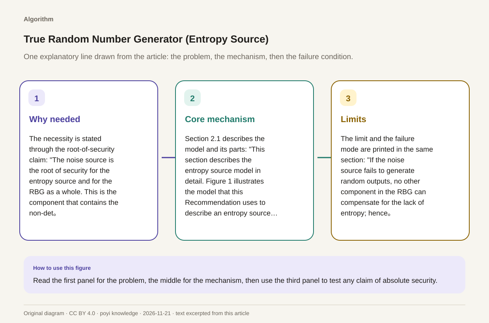
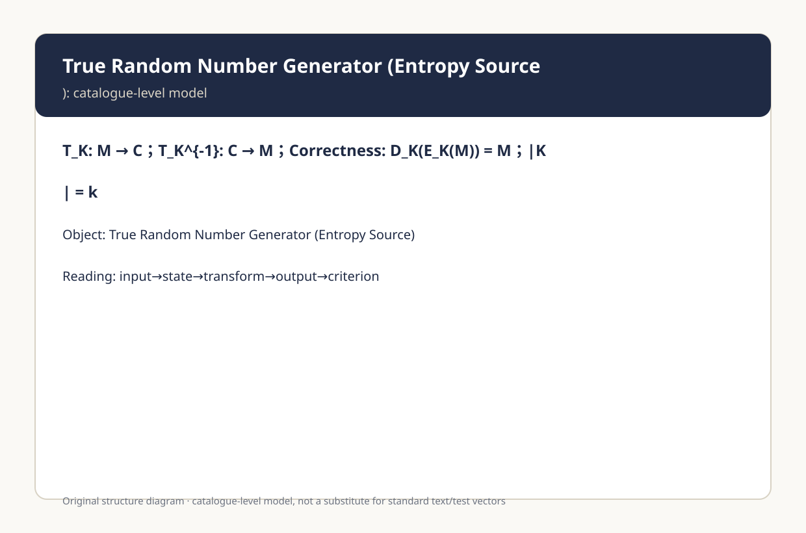

Principles
Algorithm: True Random Number Generator (真随机数发生器). Section 2.1 describes the model and its parts: "This section describes the entropy source model in detail. Figure 1 illustrates the model that this Recommendation uses to describe an entropy source and its components, which consist of a noise source, an optional conditioning component and a health testi" — true randomness is traced to a sampled noise process. §2.2 places digitisation: "If the non-deterministic activity being sampled produces something other than binary data, the sampling process includes a digitization process that converts the output samples to bits. The output of the digitized noise source is called the raw data."

Why it matters
The necessity is stated through the root-of-security claim: "The noise source is the root of security for the entropy source and for the RBG as a whole. This is the component that contains the non-deterministic, entropy-providing process that is ultimately responsible for the uncertainty associated with the bitstrin". Every uncertainty in the random-bit system ultimately rests on that non-deterministic process, which is the argument for needing a true source; a purely algorithmic expander has no such property.
Applications
What a deployment does is prescribed by this document. §1.1 names the audience: "This Recommendation is intended for use by entropy source developers (the entity that designs and builds the entropy source or a portion thereof), submitters1 (the entity that submits the entropy". §2 layers the safeguards: "The health tests can be separated into three categories: start-up tests, continuous tests (primarily on the noise source), and on-demand tests" - a true source is guarded by start-up, continuous and on-demand health tests before a registered mechanism draws from it; throughout, the document calls such a device an entropy source or an NRBG, that is, a hardware random number generator.

Limits & attacks
The limit and the failure mode are printed in the same section: "If the noise source fails to generate random outputs, no other component in the RBG can compensate for the lack of entropy; hence, no security guarantees can be made for the application relying on the RBG." Neither health tests nor conditioning can substitute for the noise itself. Hence the document states its assumption directly: "This Recommendation assumes that the sample values (i.e., the symbols) obtained from a noise source consist of fixed-length bitstrings".
History
Version facts: the keyword line reads "Conditioning functions; entropy source; health testing; min-entropy; noise source; predictors; random number generators", and §1 names the audience: "This Recommendation is intended for use by entropy source developers (the entity that designs and builds the entropy source or a portion thereof), submitters1 (the entity that submits the entropy". The retained copy is SP 800-90B (December 2018). The catalog row for this entity cites the 90B document while dating it 2007, which contradicts the retained document; that date defect is carried as a separate catalog correction.
Worked example & verification
Formal model and reproduction steps
[C=E_K(P;r),\qquad P=D_K(C)]
True Random Number Generator: the registered public parameters, key material or randomness, and message are mapped through the stated transformation to an output checked against the registered criterion. The worked example is a structural reproduction, not a new test vector; parameter ranges, standard versions and implementation details remain source-bound.
References
- Wikipedia search entry for 真随机数发生器. https://zh.wikipedia.org/w/index.php?search=%E7%9C%9F%E9%9A%8F%E6%9C%BA%E6%95%B0%E5%8F%91%E7%94%9F%E5%99%A8
- Handbook of Applied Cryptography (Menezes, van Oorschot, Vanstone). https://www.cacr.math.uwaterloo.ca/hac/